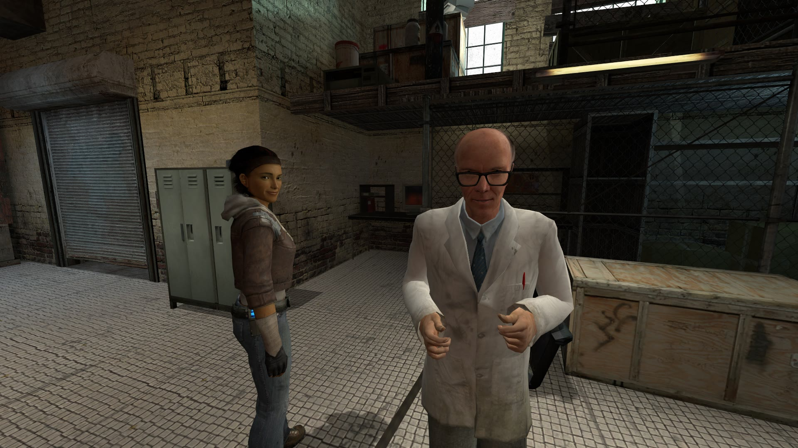

Trong bài này
Tầng 3 · Bài 07
Narrative design
Người chơi nhớ thứ họ tự ráp nối lâu hơn thứ bạn chiếu cho họ xem. Bài này nói về cách chọn kênh kể chuyện, kể qua môi trường và cơ chế, và gắn câu chuyện vào chính vòng lặp chơi.
Sau bài này bạn sẽ
- Phân biệt narrative design và viết kịch bản
- Kể chuyện qua môi trường và cơ chế
- Lồng ghép cốt truyện vào core loop
Trong Dark Souls, không ai ngồi xuống kể cho bạn nghe chuyện gì đã xảy ra với vương quốc này. Bạn đi qua một hành lang, thấy vài bộ giáp rỗng quỳ gối quay mặt về cùng một hướng. Bạn nhặt một chiếc nhẫn, dòng mô tả vỏn vẹn hai câu nhắc tới một lời thề bị phản bội. Bạn ghép hai chi tiết đó lại và tự rút ra một kết luận — kết luận ấy là của bạn, nên bạn nhớ nó.
Đổi lại, hãy nhớ lần gần nhất bạn bấm Skip một đoạn cắt cảnh dài. Cùng một lượng thông tin, hai cách đưa tới, hai kết quả trái ngược. Khoảng cách giữa hai tình huống đó chính là công việc của narrative design.
Narrative design là gì
Người ta hay gộp hai vai trò làm một, nhưng chúng khác nhau ở câu hỏi trung tâm:
| Vai trò | Lo phần nào | Câu hỏi trung tâm |
|---|---|---|
| người viết | Nội dung | Nhân vật là ai, họ nói câu gì, chuyện xảy ra theo trình tự nào? |
| narrative designer | Đường dẫn | Thông tin đó đến tay người chơi bằng kênh nào, vào lúc nào, đổi lấy hành động gì? |
Nói cách khác, narrative designer không hỏi "cảnh này viết thế nào cho hay" mà hỏi "làm sao để người chơi tự phát hiện ra điều này trong lúc họ đang chơi". Đó là một bài toán thiết kế, cùng họ với thiết kế màn chơi hay thiết kế hệ thống — chỉ khác ở thứ nó cần sinh ra: sự hiểu và cảm xúc về câu chuyện.
Ghi chú
Ranh giới hai vai trò này không có chuẩn ngành thống nhất — mỗi studio chia việc một kiểu, nhiều nơi một người làm cả hai. Cách phân biệt ở trên là để bạn dễ nắm việc, không phải một định nghĩa được chốt trong tài liệu gốc nào.
Trong khung MDA (bài 01), câu chuyện không phải là một cơ chế — nó nằm ở tầng Aesthetics, tức là một loại cảm xúc mà game nhắm tới. Paper gốc liệt kê tám aesthetics, trong đó Narrative đứng thứ ba với nhãn "Game as drama" (trò chơi như một vở kịch). Chi tiết này quan trọng hơn vẻ ngoài của nó: nó nhắc rằng câu chuyện là đích đến, còn cutscene hay audio log chỉ là phương tiện — và phương tiện thì có thể thay.
Càng về cuối chuỗi: quyền kiểm soát của designer giảm dần
Càng về cuối chuỗi: công sức diễn giải của người chơi tăng dần — và cảm giác "chuyện này là của tôi" cũng tăng theo
Năm kênh kể chuyện và giá phải trả
Mỗi kênh mạnh ở một chỗ và tính tiền ở chỗ khác. Chọn kênh sai là nguyên nhân phổ biến nhất khiến một cốt truyện tốt không tới được người chơi.
| Kênh | Mạnh ở | Giá phải trả |
|---|---|---|
| Cutscene | Đảm bảo 100% người chơi nhận đúng thông tin, kiểm soát được nhịp và khung hình | Tước quyền điều khiển; càng dài càng dễ bị Skip; tốn tiền nhất |
| Thoại có lựa chọn | Cho người chơi thể hiện mình là ai; tạo cảm giác được nghe | Chi phí lồng tiếng và bản địa hóa nhân lên theo số nhánh |
| thoại bật tự động | Kể chuyện mà không dừng gameplay; làm thế giới có vẻ sống | Lặp lại nhanh chóng thành tiếng ồn; không đảm bảo người chơi nghe được |
| Ghi chép, nhật ký, audio log | Rẻ; chứa được lượng lớn bối cảnh cho ai muốn đào sâu | Dễ thành bãi đổ thông tin; người chơi đọc trong lúc không chơi gì cả |
| Môi trường và cơ chế | Người chơi tự rút ra kết luận nên nhớ lâu; không tốn một chữ nào | Không kiểm soát được họ có hiểu hay không; cần đội ngũ art và design ăn ý |
Kể chuyện qua môi trường
kể chuyện qua môi trường là kênh đáng học kỹ nhất, vì nó là thứ duy nhất trong bảng trên vừa rẻ vừa khó bị bỏ qua. Trong bài nói What Happened Here? Environmental Storytelling tại GDC 2010, Harvey Smith và Matthias Worch định nghĩa nó là hành vi "staging player-space with environmental properties that can be interpreted as a meaningful whole, furthering the narrative of the game" (dàn dựng không gian người chơi bằng các chi tiết môi trường có thể được diễn giải thành một ý nghĩa trọn vẹn, đẩy tiếp mạch truyện của game).
Chữ khóa nằm ở interpreted: bạn không kể, bạn bày ra bằng chứng rồi để người chơi kết luận. Trước đó, Henry Jenkins trong Game Design as Narrative Architecture đã xếp việc này thành bốn nhóm — ông viết rằng "Environmental storytelling creates the preconditions for an immersive narrative experience in at least one of four ways" (kể chuyện qua môi trường tạo tiền đề cho một trải nghiệm truyện nhập tâm theo ít nhất một trong bốn cách sau):
- Gợi liên tưởng có sẵn — không gian vay mượn thứ người chơi đã biết từ phim ảnh, truyện, lịch sử.
- Làm sân khấu — không gian là nơi các sự kiện của câu chuyện được diễn ra.
- Gài thông tin vào bối cảnh — chi tiết trong khung hình chứa mẩu chuyện đã xảy ra từ trước.
- Cung cấp nguyên liệu cho chuyện tự phát sinh — người chơi tự tạo ra câu chuyện của riêng họ từ những gì có sẵn.
Smith và Worch còn nhấn một nguyên tắc dễ bị bỏ quên: mọi khoảnh khắc kể chuyện qua môi trường phải bắt rễ từ tiền đề của chính game bạn đang làm. Một cảnh dàn dựng đẹp nhưng vô danh — không nói thêm được gì về thế giới này — là một cơ hội bị lãng phí.
Kể chuyện qua cơ chế
Mức sâu hơn nữa: để chính luật chơi mang thông điệp. Trong Papers, Please, bạn là nhân viên hải quan và cơ chế lõi chỉ là đối chiếu giấy tờ. Nhưng game trả lương theo số hồ sơ xử lý xong, còn tiền thì phải chia cho thuốc men và sưởi ấm của gia đình. Kết quả: bạn bắt đầu xử nhanh ẩu, bắt đầu từ chối người có hoàn cảnh đáng thương vì giấy tờ thiếu một dấu. Không một dòng thoại nào bảo "chế độ quan liêu biến con người thành cỗ máy" — bạn tự làm điều đó rồi tự thấy.
Điều đáng nhớ
Cutscene cho người chơi biết nhân vật cảm thấy gì. Cơ chế làm chính người chơi cảm thấy điều đó. Hai thứ này không thay thế nhau được.
Nhìn qua vài game
Ghi chú
Các định nghĩa và trích dẫn ở phần trên là theo nguồn gốc đã dẫn. Phần dưới đây là phân tích minh hoạ của bài học — cách người viết đọc các game này, không phải phát biểu của chính nhà phát triển.
| Game (thể loại) | Cách kể | Vì sao hợp |
|---|---|---|
| Half-Life 2 (PC/console) | Không cắt cảnh, giữ nguyên góc nhìn người chơi xuyên suốt | Bạn không xem Gordon Freeman gặp chuyện, bạn đang gặp chuyện — vẫn xoay camera, đi lại được trong lúc sự kiện diễn ra. Giá phải trả: dàn dựng cực kỳ công phu để chắc người chơi luôn nhìn đúng hướng. |
| Gone Home (indie) | Kể chuyện qua môi trường tới cực hạn | Toàn bộ game là đi quanh một căn nhà trống, mở ngăn kéo, đọc mẩu giấy — không kẻ địch, không thất bại. Thứ tự bạn tự chọn để mở ra chính là câu chuyện. |
| 80 Days (mobile) | Kênh chữ và lựa chọn theo từng chặng ngắn | Giải bài toán ngược: phiên chơi ngắn, màn hình nhỏ, hay bị ngắt giữa chừng. Mỗi chặng là một quyết định gọn, đọc xong cất máy được, mở lại không cần nhớ mạch dài. |
Ví dụ trong game
BioShock dùng audio log rải khắp thành phố để dựng lại chuyện đã xảy ra trước khi bạn tới. Nhưng chính game này cũng là ví dụ kinh điển cho một vấn đề: Clint Hocking viết rằng "Bioshock seems to suffer from a powerful dissonance between what it is about as a game, and what it is about as a story." (BioShock dường như mắc một sự lệch pha mạnh giữa điều nó muốn nói với tư cách một game, và điều nó muốn nói với tư cách một câu chuyện.) Ông gọi tên hiện tượng đó là lệch pha giữa luật chơi và câu chuyện: câu chuyện phê phán một điều, còn luật chơi lại bắt bạn làm đúng điều đó.
Destiny là ví dụ theo chiều ngược lại. Phần lớn bối cảnh của game ban đầu nằm trong các thẻ lore chỉ đọc được trên website, ngoài game. Viết rất hay — nhưng đặt sai chỗ, nên với đa số người chơi nó không tồn tại. Bài học rút ra rất thẳng: câu chuyện không ở trong đường đi của người chơi thì coi như chưa được kể.

Lens
Lens của câu chuyện kể qua hành động
- Nếu xóa hết cutscene và thoại, người chơi còn hiểu được bao nhiêu phần câu chuyện?
- Điều quan trọng nhất của cảnh này, người chơi biết hay tự rút ra?
- Luật chơi đang nói điều gì? Nó có mâu thuẫn với điều câu chuyện đang nói không?
- Mẩu chuyện này có nằm trên đường người chơi chắc chắn đi qua không?
- Chi tiết này nói thêm được gì về thế giới, hay chỉ là đồ trang trí vô danh?
Phỏng theo lối "Lens" trong Schell, The Art of Game Design.
Sai lầm hay gặp
Viết xong cốt truyện rồi mới hỏi game chơi thế nào
Cốt truyện viết trong chân không gần như luôn phải đập đi khi va vào cơ chế thật. Làm ngược lại: biết người chơi sẽ làm gì trong 30 giây, rồi mới hỏi câu chuyện nào hợp với hành động đó.
Dồn hết sức kể chuyện vào cutscene và thoại
David Kuelz nhận xét rằng "beginners will often focus all of their storytelling skills on their cutscenes and their dialogue, but the words are only a part of the story" (người mới thường dồn hết kỹ năng kể chuyện vào cutscene và lời thoại, nhưng chữ chỉ là một phần của câu chuyện). Thiết kế kẻ địch, ánh sáng, âm thanh, bố cục màn chơi — tất cả đều đang kể chuyện, dù bạn có chủ ý hay không.
Cho lựa chọn nhưng không cho hệ quả
Warren Spector nói thẳng: "Choices without consequences are meaningless. If they don’t lead to different outcomes – preferably radically different outcomes – what’s the point?" (Lựa chọn không có hệ quả là vô nghĩa. Nếu chúng không dẫn tới những kết cục khác nhau — tốt nhất là khác nhau triệt để — thì có ý nghĩa gì?) Hai nhánh thoại dẫn về cùng một cảnh tiếp theo không phải là lựa chọn, đó là trang trí — và người chơi phát hiện ra rất nhanh.
Dùng ghi chép để vá một không gian không kể được gì
Khi căn phòng tự nó không nói lên điều gì, rất dễ đặt thêm một mẩu nhật ký giải thích hộ. Đó là chữa triệu chứng. Sửa căn phòng trước, ghi chép chỉ nên thêm chiều sâu cho người muốn đào.
Thực hành
Dựng một cảnh không lời
- Chọn một sự kiện đã xảy ra trước khi người chơi tới: một cuộc cãi vã, một vụ tháo chạy vội, một người ở lại quá lâu.
- Vẽ sơ đồ một căn phòng và đặt vào đó tối đa 5 vật thể. Không chữ viết, không ghi âm, không bảng chỉ dẫn.
- Với mỗi vật thể, viết một dòng: nó chứng minh điều gì về sự kiện đó?
- Đưa sơ đồ cho một người chưa biết gì và hỏi đúng một câu: "Chuyện gì đã xảy ra ở đây?"
- Ghi lại câu trả lời của họ. Lệch bao nhiêu so với sự kiện bạn định kể?
Xem gợi ý
Một vật thể đơn lẻ hiếm khi kể được gì; sức mạnh nằm ở quan hệ giữa chúng. Hai chiếc cốc thì chỉ là hai chiếc cốc — nhưng hai chiếc cốc, một chiếc vỡ dưới sàn, và một chiếc ghế bị đẩy ngược ra sau thì đã thành một câu chuyện. Nếu người kia trả lời lệch hẳn, đừng vội sửa họ: hỏi xem chi tiết nào khiến họ nghĩ vậy. Thường đó là chi tiết bạn đặt vào mà quên mất nó cũng đang phát ra tín hiệu.
Tự kiểm tra
Khác biệt cốt lõi giữa narrative designer và game writer là gì?
C đúng: writer trả lời "kể chuyện gì", narrative designer trả lời "kể bằng kênh nào, lúc nào, đổi lấy hành động gì". D sai một nửa — ở nhiều studio một người kiêm cả hai, nhưng hai loại việc vẫn khác nhau.
Bạn cần chắc chắn 100% người chơi nắm được một thông tin, nếu không họ sẽ không hiểu nhiệm vụ tiếp theo. Kênh nào phù hợp nhất?
B đúng — đây chính là thứ cutscene giỏi nhất: đảm bảo mọi người nhận đúng thông tin. A và C không kiểm soát được người chơi có để ý hay không; D thì họ có thể chạy qua mà không nghe. Đổi lại, hãy giữ nó thật ngắn.
Một game kể câu chuyện lên án bạo lực, nhưng cách duy nhất để tiến trong game là giết thật nhiều kẻ địch và được thưởng điểm cho việc đó. Đây là hiện tượng gì?
A đúng. Chú ý phân biệt với D: kể chuyện qua cơ chế là khi luật chơi củng cố thông điệp một cách có chủ ý; ludonarrative dissonance là khi luật chơi phản lại thông điệp, thường là ngoài ý muốn.
Playtest xong, người chơi kể lại đúng diễn biến nhưng không nhớ nổi tên nhân vật nào và không nói được vì sao mình phải cứu họ. Dấu hiệu này gợi ý điều gì?
D đúng. Nhớ diễn biến mà không nhớ người nghĩa là thông tin có tới nhưng không dính — thường vì nhân vật chỉ xuất hiện lúc kể chuyện chứ không can dự vào hành động của người chơi. A và C là phản xạ quen thuộc: đổ thêm thông tin vào cùng một cái kênh đang không hiệu quả.
Thẻ ôn nhanh
Chốt lại
Nhớ 3 điều
- 1 Câu chuyện là đích đến (Aesthetics), cutscene chỉ là một phương tiện — và phương tiện thì thay được.
- 2 Người chơi nhớ thứ họ tự ráp nối lâu hơn thứ được chiếu cho xem; bày bằng chứng thay vì kể kết luận.
- 3 Luật chơi luôn đang nói một điều gì đó. Kiểm tra xem nó có mâu thuẫn với câu chuyện của bạn không.
Đọc thêm
- Bài viết Game Design as Narrative Architecture
Đọc để có bốn cách không gian tạo tiền đề cho câu chuyện — khung gốc mà gần như mọi bài về environmental storytelling sau này đều dựa vào.
- Talk What Happened Here? Environmental Storytelling
Đọc để lấy nguyên tắc thực hành cụ thể; bản ghi chú slide có công khai trên trang cá nhân của Worch.
- Bài viết Environmental Storytelling: Creating Immersive 3D Worlds Using Lessons Learned from the Theme Park Industry
Đọc để thấy gốc rễ của kỹ thuật này đến từ thiết kế công viên chủ đề, trước cả khi nó thành thuật ngữ trong ngành game.
- Bài viết Ludonarrative Dissonance in Bioshock
Đọc bản gốc thay vì đọc tóm tắt — bài rất ngắn, và phần lớn bài viết trên mạng trích sai ý của nó.
- Sách The Art of Game Design
Đọc các chương về story để có thêm bộ câu hỏi tự vấn khi ráp câu chuyện vào gameplay.